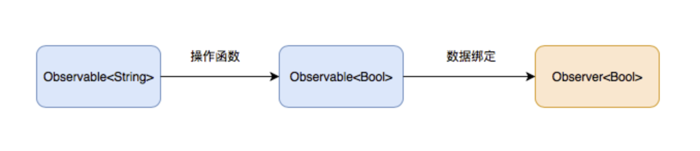

RxSwift使用简介
# 前言
RxSwift是Rx的Swift版本，是Swift函数响应式编程的一个开源库。
 函数响应式编程是通过构建函数操作数据序列，然后对这些序列做出响应的编程方式。它结合了函数式编程以及响应式编程。它的目的是使异步操作、事件和数据流能够更便捷的序列化处理。
# 1. 函数响应式编程
# 函数式编程
函数式编程是将函数作为参数传递，或者将函数作为返回值。通过组合函数来实现想要的结果。
# 响应式编程
响应式编程是使用异步数据流进行编程。任何事物都可以是一个数据流，例如用户输入、按钮的点击事件、网络请求等，监听数据流并做出相应。
在这个基础上，可以用多种函数去组合、创建、过滤这些数据流，这就是函数响应式编程。
# 2. RxSwift简单介绍
# 1.Observable
Observable指的是可被观察者或者事件源。Observable是一种像信号一样的序列，可以理解为一串数组，但是需要有观察者监听这些信号。 RxSwift框架已经创建好了很多常用的序列，例如UIButton的点击事件，UITextField的文本发生变化等等。我们还可以自定义序列。
let numbers: Observable<Int> = Observable.create { observer -> Disposable in
observer.onNext(0)
observer.onNext(1)
observer.onNext(2)
observer.onNext(3)
observer.onNext(4)
observer.onNext(5)
observer.onNext(6)
observer.onNext(7)
observer.onNext(8)
observer.onNext(9)
observer.onCompleted()
return Disposables.create()
}
2
3
4
5
6
7
8
9
10
11
12
13
14
15
其中，next事件表示发送新的数据，complete事件表示发送完成，error表示出现异常。
Single 它只能发出一个元素，或者是一个 error 事件。
func getRepo(_ repo: String) -> Single<[String: Any]> {
return Single<[String: Any]>.create { single in
let url = URL(string: "https://api.github.com/repos/\(repo)")!
let task = URLSession.shared.dataTask(with: url) {
data, _, error in
if let error = error {
single(.error(error))
return
}
guard let data = data,
let json = try? JSONSerialization.jsonObject(with: data, options: .mutableLeaves),
let result = json as? [String: Any] else {
single(.error(DataError.cantParseJSON))
return
}
single(.success(result))
}
task.resume()
return Disposables.create { task.cancel() }
}
}
2
3
4
5
6
7
8
9
10
11
12
13
14
15
16
17
18
19
20
21
22
23
24
25
26
27
Completable 它只能产生一个 completed 事件，或者产生一个 error 事件。
func cacheLocally() -> Completable {
return Completable.create { completable in
// Store some data locally
...
...
guard success else {
completable(.error(CacheError.failedCaching))
return Disposables.create {}
}
completable(.completed)
return Disposables.create {}
}
}
2
3
4
5
6
7
8
9
10
11
12
13
14
15
Maybe 它介于 Single 和 Completable 之间，它要么只能发出一个元素，要么产生一个 completed 事件，要么产生一个 error 事件。
func generateString() -> Maybe<String> {
return Maybe<String>.create { maybe in
maybe(.success("RxSwift"))
// OR
maybe(.completed)
// OR
maybe(.error(error))
return Disposables.create {}
}
}
2
3
4
5
6
7
8
9
10
11
12
13
14
15
Driver 它主要是为了简化 UI 层的代码。如果有1.不会产生 error 事件，2.一定在 MainScheduler 监听（主线程监听）3.共享附加作用这些特征也可以使用Driver。
let results = query.rx.text
.throttle(0.3, scheduler: MainScheduler.instance)
.flatMapLatest { query in
fetchAutoCompleteItems(query)
}
results
.map { "\($0.count)" }
.bind(to: resultCount.rx.text)
.disposed(by: disposeBag)
results
.bind(to: resultsTableView.rx.items(cellIdentifier: "Cell")) {
(_, result, cell) in
cell.textLabel?.text = "\(result)"
}
.disposed(by: disposeBag)
2
3
4
5
6
7
8
9
10
11
12
13
14
15
16
17
Signal 类似于Driver，唯一的区别是，Driver 会对新观察者重新发送上一个元素，而 Signal 不会对新观察者发送。
ControlEvent 专门用于描述 UI 控件所产生的事件，它有1.不会产生error事件，2.一定在 MainScheduler 订阅（主线程订阅）,3.一定在 MainScheduler 监听（主线程监听）4.共享附加作用 这些特征。
# 2.Observer
观察者对象，用来监听事件并做出响应，观察者需要订阅Observable，才能受到其发出的事件。 例如上面的Observable发送了10个数字，可以创建一个Observer，监听并打印收到的数据
numbers.subscribe(onNext: { number in
print(number)
}, onError: { error in
print("error： \(error.localizedDescription)")
}, onCompleted: {
print("completed")
})
2
3
4
5
6
7
AnyObserver 可以用来描叙任意一种观察者。
Binder 主要有以下两个特征：1.不会处理错误事件，2.确保绑定都是在给定 Scheduler 上执行（默认 MainScheduler）
# 3.Operator - 操作符
操作符可以帮助大家创建新的序列，或者变化组合原有的序列，从而生成一个新的序列。 例如通过fliter操作符来过滤一个数组序列中大于10的数据
let disposeBag = DisposeBag()
Observable.of(1, 5, 10, 15, 20, 25)
.filter { $0 > 10 }
.subscribe(onNext: { print($0) })
.disposed(by: disposeBag)
2
3
4
5
6
输出结果
15
20
25
2
3
总结：RxSwift 归根结底还是观察者模式。用户输入、点击事件、定时器、网络请求等都可以当成 Observable（被观察者），Observer（观察者）总会在 Observable 处注册一个订阅，当事件发生时，Observable 找到所有的订阅并通知观察者。